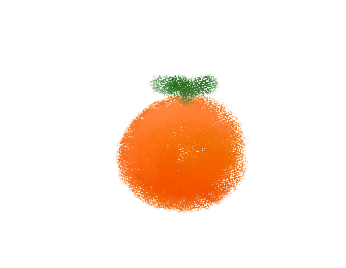

ORANGE PICKING
Pick Your Own Oranges at Our Farm
Immerse yourself in the delightful experience of picking your own fresh oranges right from our orchard. Walk-in customers are welcome to
visit our farm and enjoy a hands-on, farm-to-table adventure. Stroll through our beautiful grove, select the ripest oranges directly from the
trees, and savor the unbeatable freshness. Once you've gathered your oranges, they can be used as the key ingredient in any item from our
menu. Whether you're looking to make a special dish or simply enjoy the fruit as it is, our farm offers a unique and enjoyable way to connect
with your food. Visit us today and take part in this wonderful harvest experience!

Pick Your Own Oranges Online with ClemenApp
Experience the joy of selecting fresh oranges straight from our farm, all from the comfort of your home.
With ClemenApp, you can virtually explore our orchard and handpick the oranges that will be the key
ingredient in your order. Simply log in to ClemenApp, browse through our grove, and choose the perfect
oranges for your needs. Once you've made your selection, our team will carefully harvest and prepare your
chosen fruit, ensuring peak freshness and flavor. Enjoy the farm-to-table experience with any item from our
menu, made even more special with your personally picked oranges. Start your citrus adventure today with
ClemenApp!

DINE TIME
From Orchard to Table: Freshly Picked Oranges in Our Cuisine
Delight in the freshest flavors with our unique farm-to-table experience. The oranges you pick from our orchard will be carefully
incorporated into our delicious cuisine. Each orange, selected by you, will serve as a key ingredient in your chosen dish, enhancing it
with natural sweetness and vibrant citrus notes. Our menu features a variety of options where these handpicked oranges shine, from
refreshing salads and zesty sauces to decadent desserts and invigorating beverages. Experience the true essence of freshness and
flavor with every bite, knowing that the journey of your meal began right here in our grove. Enjoy the unparalleled taste of our
cuisine, made special with your very own handpicked oranges.
ArsDene
All Rights Reserved
